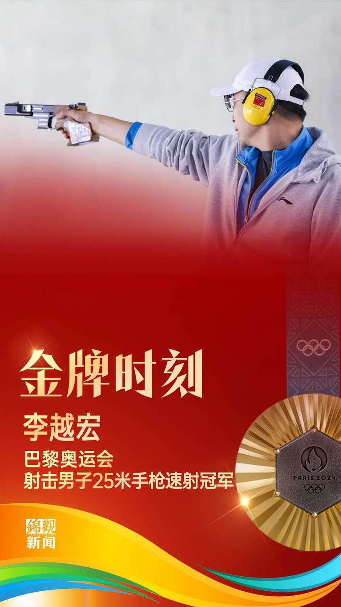
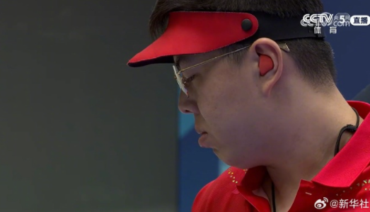
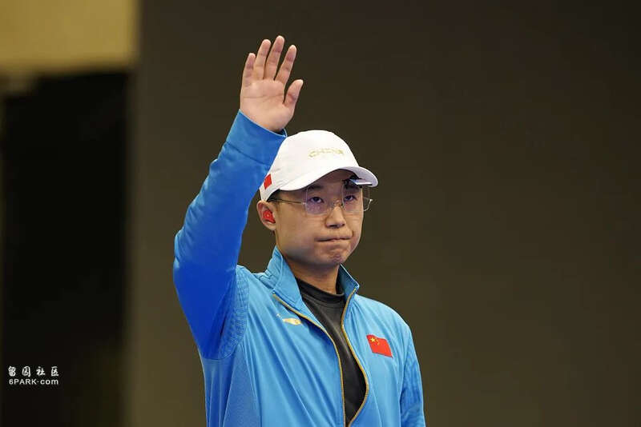
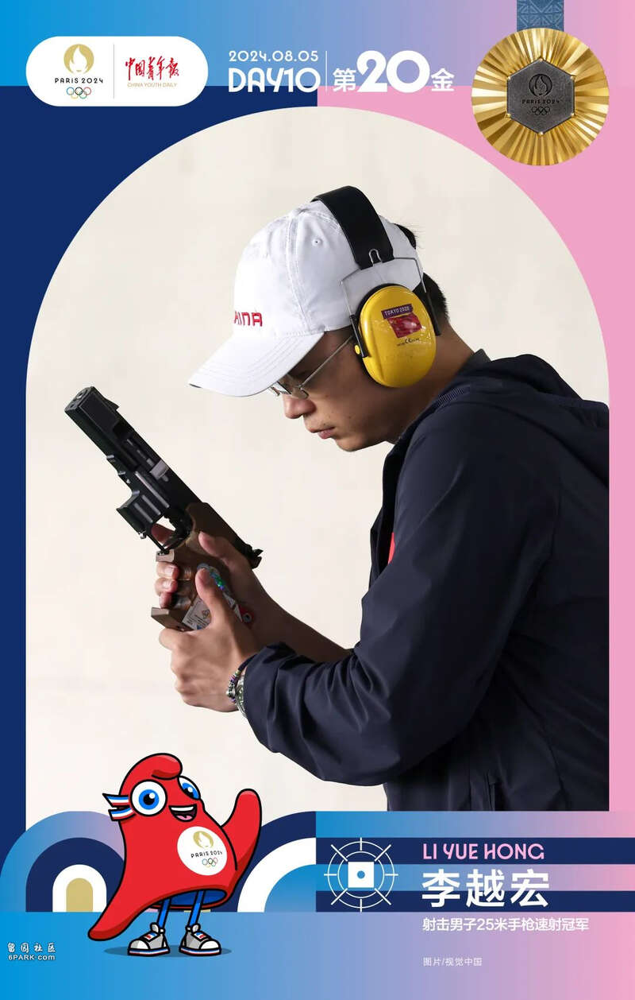

当地时间5日，中国选手李越宏在巴黎奥运会射击男子25米手枪速射项目上夺得金牌。

同时，中国选手王鑫杰在巴黎奥运会射击男子25米手枪速射项目上摘得铜牌。

王鑫杰

北京时间8月5日下午3点半，在巴黎奥运会男子25米手枪速射决赛中，中国选手李越宏发挥出色，获得金牌。另一位中国选手王鑫杰获得第三，获得铜牌。
值得一提的是，巴黎奥运会对于李越宏来说，就是期待成为一次圆梦之旅了。
自1984年中国射击队参加奥运会以来，在步枪和手枪的所有小项中，只有男子25米手枪速射还没有获得过奥运金牌，这对于速射项目来说是一个不小的遗憾。这一次，中国速射教练和队员们终于打破了这个魔咒。
在此前25米手枪速射资格赛中，中国运动员李越宏和王鑫杰发挥出色，以前两名的成绩晋级男子25米手枪速射决赛。
男子25米手枪速射项目高手云集，世界纪录保持者雷茨、奥运会卫冕冠军基康普瓦等名将悉数在列。资格赛第一阶段，韩国选手赵永宰发挥出色，打出297环排名第一，李越宏和王鑫杰分别排名第二和第四。
第二阶段，李越宏和王鑫杰均打出294环，赵永宰则连续出现9环。最终，李越宏以588环的成绩排名资格赛第一，王鑫杰以587环排名第二，赵永宰排名第四。雷茨、基康普瓦等争冠热门未能闯入决赛。
最近两年状态火热
从巴黎周期的表现来看，中国速射表现出了极高的竞技状态，去年杭州亚运会的巴库世锦赛，中国队李越宏、刘杨攀、王鑫杰出战团体赛，团体成绩为1756环，追平了世界纪录，足足领先亚军德国队16环。
其中，状态最好的是李越宏，个人决赛，规则是4秒5发子弹为一组的射击，每发命中9.7环及以上才算中靶，李越宏40发打出惊人的39中。而他在这场比赛中优势巨大，最后一组的5发还没打就已经提前锁定冠军——最后他仍然稳稳命中最后5发，把韩国选手保持了5年的世界纪录又提升了1中。毫不夸张地说，这几乎是一个难以被打破的世界纪录。
赛后他坦言世锦赛的那场比赛并没有考虑太多，“更多的是和教练的配合，一些技战术方面的应用上，我觉得可能比以往的比赛更加细腻了一些，包括到最后打这个破纪录的这个时候，其实也没有考虑太多，主要就是尽力把自己该做的东西做好。”
随后的亚运会，男子25米手枪速射团体赛中，还是这三人组成的中国队以1765环的成绩创造了新的世界纪录并夺冠。个人赛决赛，虽然33中的成绩比起世锦赛还有一些不足，但这足以确保李越宏时隔13年后第二次夺取了亚运会金牌。
本场决赛，李越宏前5发只命中3次，第二个5发也只有4中，“开始有些紧张，看到那么多好朋友都在，确实紧张，后来觉得再这么打下去就输了。”赛后李越宏总结时说，比赛中心理压力有些大，自己也进行了一些调整，“在家门口比赛，不能丢气势，开始调整自己的状态，慢慢出感觉了。”
奥运会前两站世界杯比赛，巴库站的第一场决赛，李越宏状态稍有起伏获得第五名，但很快调整状态的他就在第二场决赛以34中拿到冠军；随后科特布斯站，他又以32中收获冠军。
奥运三朝元老，只差一枚金牌
随着去年巴库世锦赛拿到冠军，李越宏距离完成射击大满贯就只剩下奥运会金牌。34岁的李越宏年少成名，早在2010年广州亚运会，他就夺得了男子25米手枪速射的金牌。巴黎，这是老将李越宏第三次参加奥运会。
前两次，他分别在里约奥运会和东京奥运会上获得铜牌。2016年里约奥运会是李越宏参加的第一届奥运会。资格赛李越宏打出584环，排在第五位进入决赛。在不被看好的情况下，李越宏最终拼得了一枚铜牌。
对于第一次奥运之旅，李越宏仍记忆犹新，“我觉得整个表现还是可以认可的，因为不管是从之前的准备上，我觉得我每天都在很努力地去准备了。然后我觉得能够打到这样我很开心，因为我至少可以证明了自己。因为近一年多的时间来，自己的整体的水平其实不好，进入决赛的机会在世界大赛上相对也少一些，所以说整个的打起来一开始还是会有一些紧张在里面。”
如果说第一次是证明自己，那么第二次奥运会之旅就有些遗憾，东京奥运会，他加枪击败韩国选手再次拿到铜牌，“第一次在里约站上奥运会赛场时，感觉没那么强烈。随后的东京奥运会，我自己还是有进步空间的，只是没做好，否则可以更进一步。”
在李越宏看来，“奥运会的赛场毕竟和其他的比赛都不同，然后整个人对于心态的变化，对于动作的掌控，随着心态的变化而变化很多。所以说很正常，因为每个人或多或少都会出现失误。”
“希望去参与这样的一个突破。作为我们来讲，更多的就是在训练当中去团结一心，尽量去为这个项目去做出贡献。”
对于打破魔咒这个话题，他看得很开，“至于真的是啊谁去打破这个魔咒，或者谁去打破这个突破它，我觉得也不是特别重要。主要是我们整体的一个团队再去突破它，我觉得就是非常好的。我觉得还是尽力地去做好自己该做的事情。不要有过多的想法，也不要去太强求或者太苛求。针对每一天的训练，针对每一场的比赛去做好该做的方案。然后尽力在最终的比赛上去展现一个比较良好的自己就可以。”
